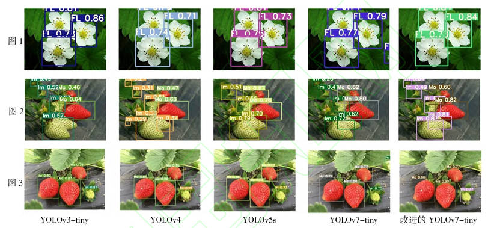
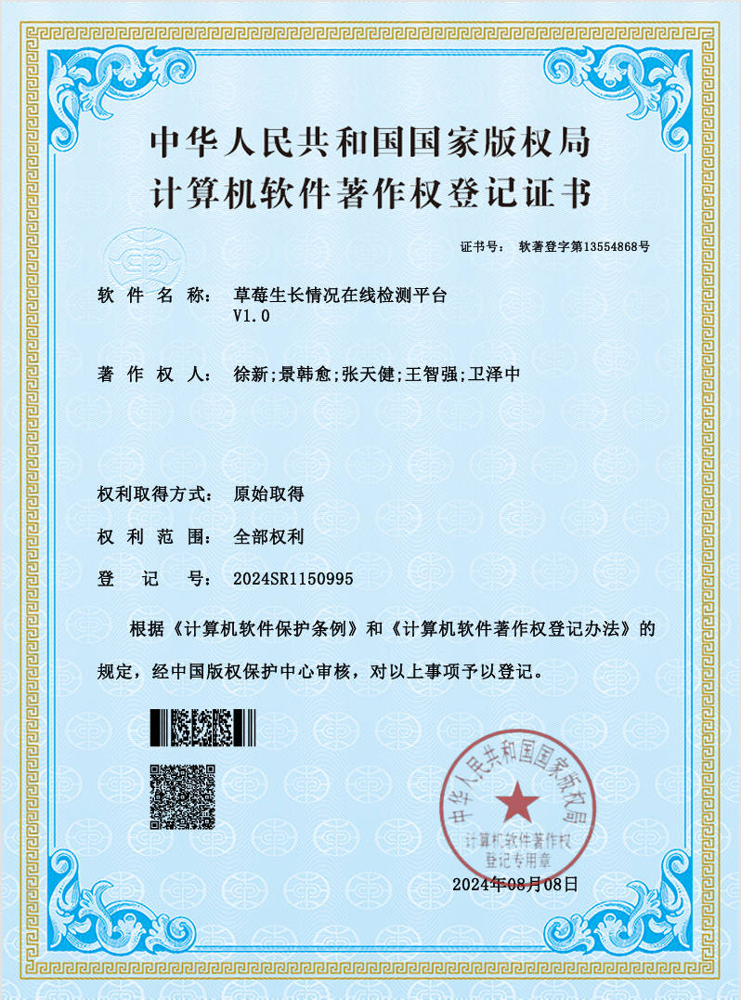
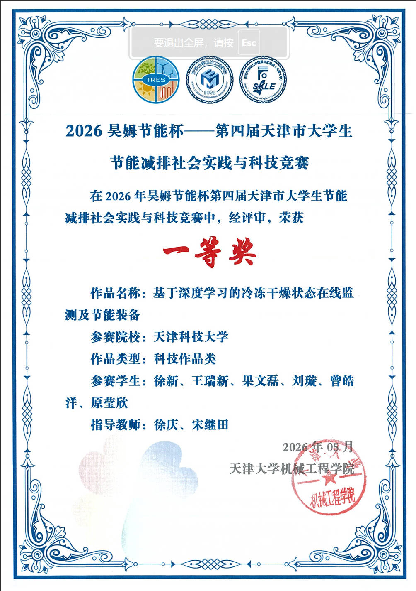
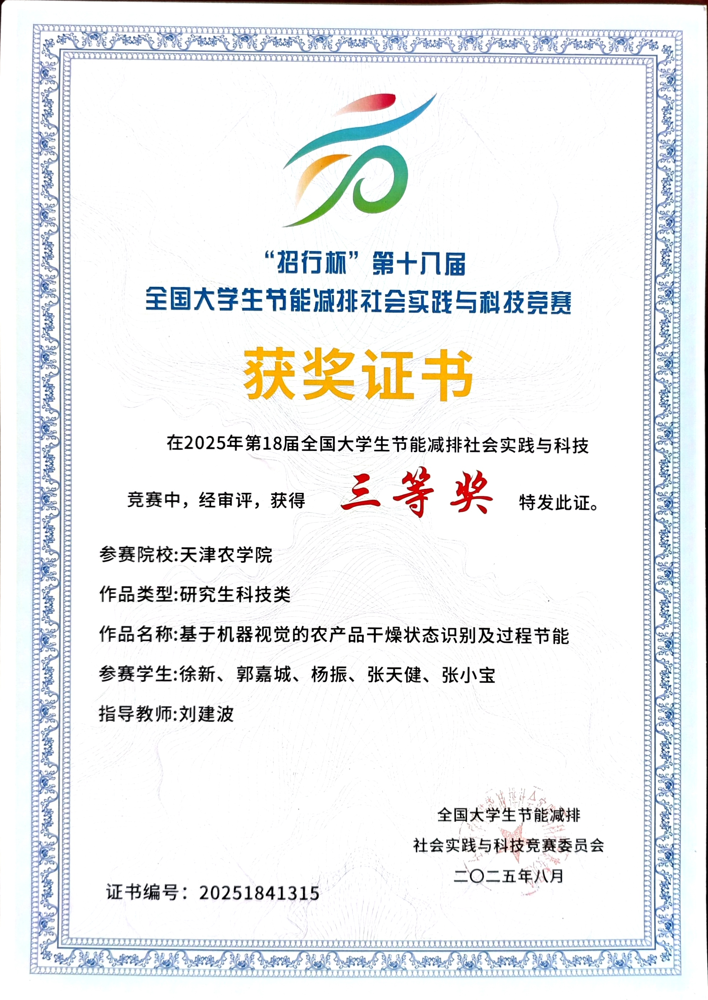
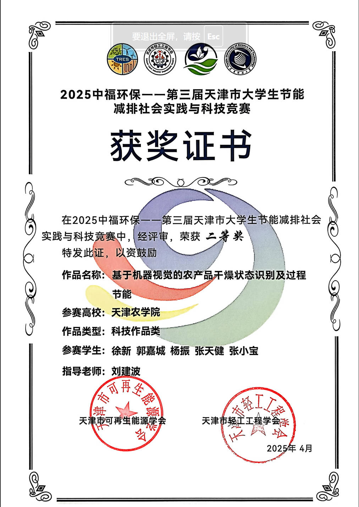
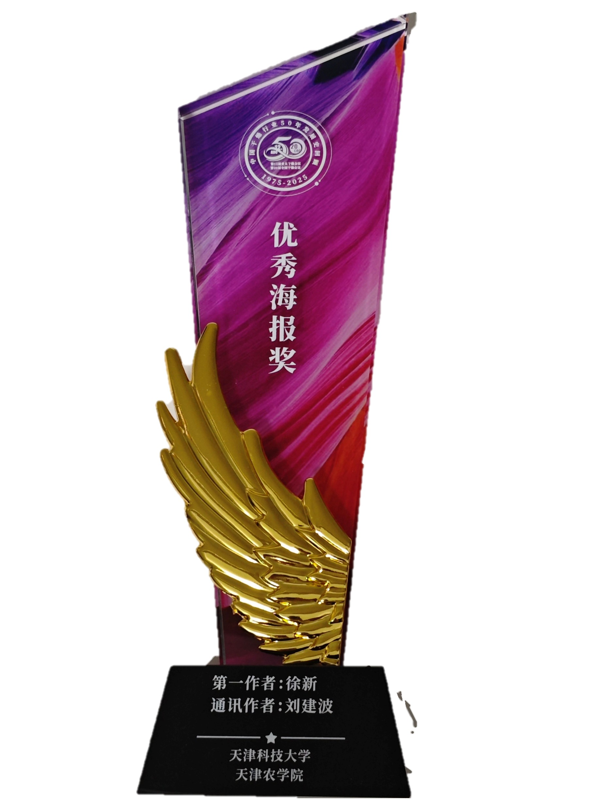
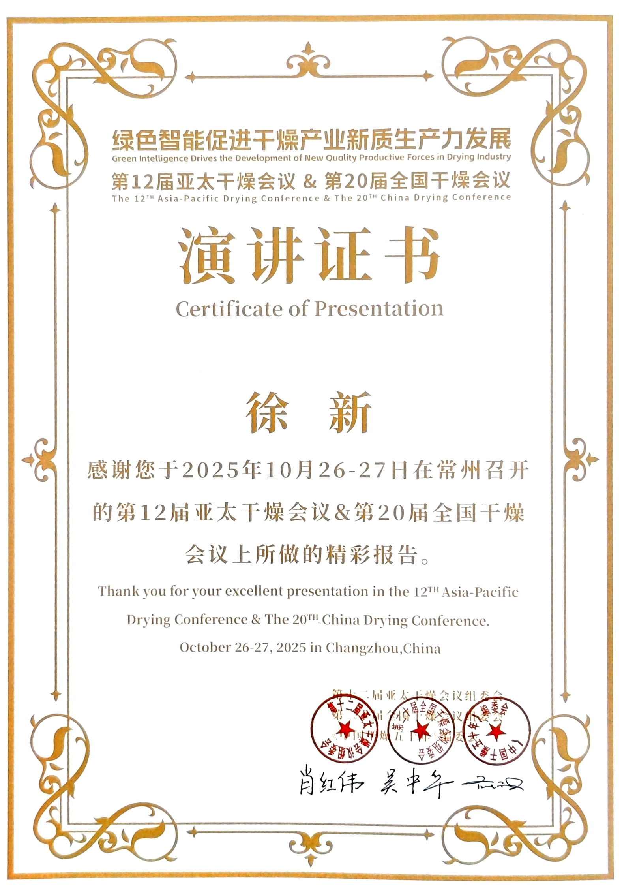
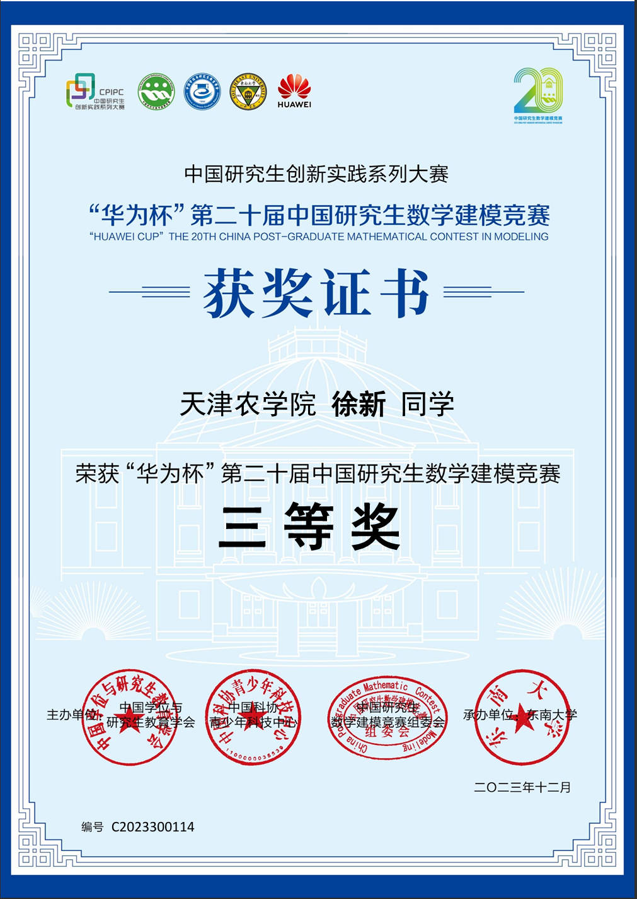

Professional Affiliations / 社会兼职
Journal Reviewer — World Journal of Food Science and Technology
Education / 教育背景
Ph.D., Mechanical Engineering (Food Machinery Design & Equipment)
Tianjin University of Science & Technology, School of Mechanical Engineering
Advisor: Prof. Xu Qing
M.S., Computer Technology —— 085404
Tianjin Agricultural University, College of Engineering and Technology
Advisor: Liu Jianbo
B.S., Mechanical Design, Manufacturing & Automation (A- Discipline)
Guangdong University of Technology, School of Electromechanical Engineering
Research Interests / 研究方向
Drying Science & Technology
Low Pressure Superheated Steam Drying (LPSSD), vacuum drying, freeze-drying: mechanism study and equipment optimization.
Computer Vision & Intelligent Detection
Deep learning-based (YOLO series) online detection of agricultural product drying stages.
Intelligent Drying Systems
Closed-loop computer vision control for smart drying processes.
Food Processing Equipment Design
Optimization and energy-efficient design of drying equipment for agricultural products.
Publications / 论文发表
.jpg)
.jpg)
.jpg)
.jpg)
.jpg)
.jpg)
.jpg)
.jpg)
.jpg)
.jpg)
.jpg)
.jpg)
.jpg)

Conference Presentations / 会议报告

Patents & Software Copyrights / 专利及软著
Invention Patents
Utility Model Patents
Software Copyrights

Research Projects / 项目经历
Development of Intelligent Drying System for Agricultural Products Based on Machine Vision
Technology Innovation Guidance Special Fund, No. 23YDTPJC00630, 50,000 RMB
Tianjin Municipal Science & Technology Bureau — Key Project (Provincial/Ministerial Level). Principal Investigator; full participation from proposal to completion.
Awards & Honors / 获奖荣誉





